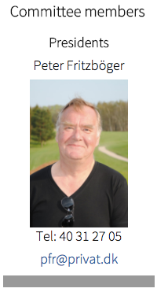

<div class="pages">
  <div data-page="okonomi" class="page navbar-fixed toolbar-fixed" >
    <div class="navbar">
      <div class="navbar-inner">
        <div class="left">
          <a href="#" class="link back icon-only"><i class="icon icon-back"></i></a>
          <!-- <a href="#" class="back link icon-only"><i class="icon icon-back"></i></a> -->
        </div>
        <div class="center">EMAC</div>
        <!-- <div class="right"></div> -->
        <div class="right">
        </div>
      </div>
    </div>
    <div class="page-content" style="padding-top:45px;">
       <div class="content-block">
          <p>EMAC is, like other committees in Hornbæk Golf Club, a committee that acts as the Board's "extended arm" in the areas mentioned, that the committee performs by the Board defined practical tasks.
          <br /><br />
          When the Board to the club members are responsible also for committee operations, decisions of major economic significance or decisions of a more fundamental sport political nature of the Board.
          <br /><br /> 
          • Finance Committee Chairman and other members appointed / sold all of the club's board. It identifies a number of members as deemed appropriate. The priority that committee members must have knowledge economy.<br />
          • In the event that none of Finance Committee members are also members of the club's board of directors, appointed a board that can act as a permanent contact between the Committee and the Board.<br />
          • Committee meetings are held as often as the Committee members deemed necessary. Committee members do not agree on the formal conditions for convening and organizing meetings, sets out the Board's guidelines.<br />
          • Minutes of the meetings. A copy of the note handed to the secretariat, where the minutes shall be available to the Board.<br />
          • Committee's primary task is to provide input to the Board about the club's finances and participation in meetings with economic cooperation partners such as banks, mortgage banks and leasing providers.<br />
          • The committee may complain to the Board if the board does not comply with the decisions adopted at the club's annual general meetings.<br />
          • It is appropriate for the Committee participating in other committees that have great economic importance for Hornbæk Golf Club and always participates in the construction and building projects with a budget of kr. 500,000.<br />
          • The Committee shall prepare proposals for the annual budgets for the club and in the establishment of the club's annual report. Committee supervisor Secretariat in economic issues and initiates any. more appropriate procedures in the secretariat.<br />
          • The Committee shall prepare proposals for the annual budgets of the committee. The budget contains among others all costs for meeting and training activity.<br />
          • There must be no use of the budget subject envelopes for larger investments without the specific investment previously approved by the Board<br />
          • Expenditure must be certified by the chair.<br />
          • The committee's work is voluntary unpaid work.</p><br />
          
        </div>
    </div>
    </div>
    </div>
  </div>
</div>
